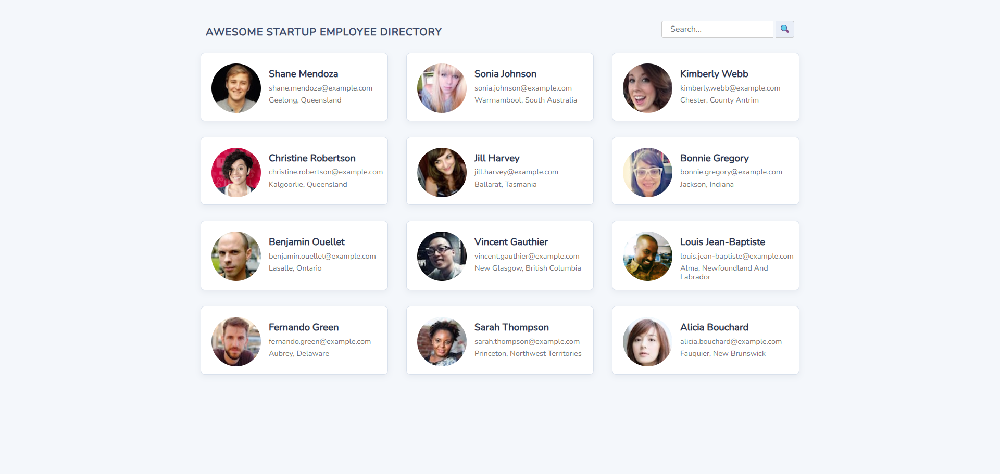

Public API Employee Directory
A dynamic employee directory that retrieves and displays user data from the Random User API. The application uses asynchronous JavaScript to fetch remote data, dynamically generate employee cards, and display detailed profiles in interactive modals. Users can navigate between employees and filter results using a live search feature.
Technologies
- Semantic HTML5
- Responsive CSS
- JavaScript (ES6)
- Promises
- Async & await
- DOM Manipulation
- Array methods: filter
- Public REST API Integration
